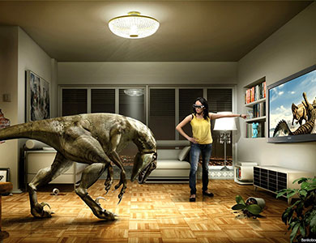
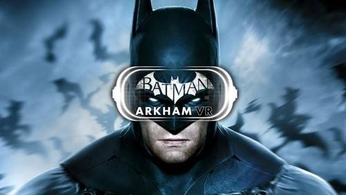
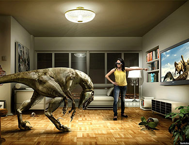
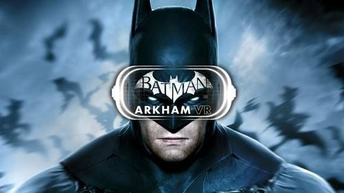

关于vr的小故事
当时的哲学家柏拉图在提出“理念论”时，讲了一个著名的洞穴比喻：”设想在一个地穴中有一批囚徒；他们自小呆在那里，被锁链束缚，不能转头，只能看面前洞壁上的影子。在他们后上方有一堆火，有一条横贯洞穴的小道；沿小道筑有一堵矮墙，如同木偶戏的屏风。人们扛着各种器具走过墙后的小道，而火光则把透出墙的器具投影到囚徒面前的洞壁上。囚徒自然地认为影子是惟一真实的事物。如果他们中的一个碰巧获释，转过头来看到了火光与物体，他最初会感到困惑；他的眼睛会感到痛苦；他甚至会认为影子比它们的原物更真实。”这是目前业内认为关于虚拟现实最早的模糊性描述。
上面的故事是目前业内认为关于虚拟现实最早的模糊性描述。
但虚拟现实毕竟是一门技术，真正谈它的历史还得从20世纪初开始，
大致分为6个阶段，跟随着我们的脚步一起看一看吧。
 



关于“虚拟现实”这个词的起源，目前最早可以追溯到1938年法国剧作家知名著作《戏剧及其重影》，在这本书里阿尔托将剧院描述为“虚拟现实（la réalité virtuelle）”。到了1973年，Myron Krurger开始提出“Virtual Reality”的概念。但牛津词典列举的最早使用是在1987年的一篇题为“Virtual Reality”但与今天的虚拟现实没有太大关系的文章。上面这些都有待考证， 目前公认的现在所说的“虚拟现实（Virtual Reality）”，是由美国VPL公司创建人拉尼尔（Jaron Lanier）在80年代提出的，也叫灵境技术或人工环境。 但在1962年之前，”虚拟现实“还是以模糊幻想的形式见诸于各大文学作品里。其中最为著名的是英国著名作家阿道司·赫胥黎(Aldous Leonard Huxley）在1932年推出的长篇小说《美丽新世界》，这本以26世纪为背景， 描写了机械文明的未来社会中人们的生活场景的书，里面提到“头戴式设备可以为观众提供图像，气味，声音等一系列的感官体验，以便让观众能够更好的沉浸在电影的世界中。”
三年之后的1935年，美国著名科幻小说家斯坦利·威因鲍姆发表了小说《皮格马利翁的眼镜》。 书中提到一个叫阿尔伯特·路德维奇精灵族教授发明了一副眼镜，戴上这副眼镜后，就能进入到电影当中，“看到、听到、尝到、闻到和触到各种东西。 你就在故事当中，能跟故事中的人物交流。你就是这个故事的主角”。这两篇小说是目前公认的对“沉浸式体验”的最初描写，里面提到的设备预言了今天的VR头盔。人类对科技的挺进，最先都是基于文学或者艺术作品体现出来。先由一个作家在一个作品提出，接着会有另外一个作家在另一个作品里完善，慢慢把大家人类在发展过程中所遇到的需求包装成科幻作品提了出来，等待这伟大的科学家来实现。到了1950年的时候，美国科幻作家雷·道格拉斯·布莱伯利开始在小说《大草原》（the veldt）一文中提到VR旅游的桥段了。说一所叫Happylife的房子，里面装满各种各样的机器，能让孩子置身于非洲大草原，并感觉一模一样，就是今天所说的“沉浸感”体验。
有资料显示，1956年，具有多感官体验的立体电影系统Sensorama就被开发。但目前的多方面资料认为，莫顿·海利希(Morton Heilig)是在1960年才获得Telesphere Mask专利的，这个专利图片看起来跟今天的VR头显差不多。到了1967年，Morton Heilig才构造了一个多感知仿环境的虚拟现实系统，这套被称为Sensorama Simulator的系统也是历史上第一套VR系统。由莫顿·海利希(Morton Heilig)开始，虚拟现实继续在文学领域发酵，同时也有科学家开始介入研究。 1963年，未来学家 Hugo Gernsback 在Life杂志的一篇文章中探讨了他的发明——Teleyeglasses：据说这是他在30年以前所构思的一款头戴式的电视收看设备。 使得VR设备有了更加具体的名字：Teleyeglasses，这个再造词的意思是这款设备由电视
+眼睛+眼镜组成，离今天所说的VR技术 差别还有点大，但已经埋下了这个领域的种子。到了1965年，美国科学家LvanSutherland提出感觉真实、交互真实的人机协作新理论，不久之后，美国空军开始用虚拟现实技术来做飞行模拟。 随后为了实践自己的理论，LvanSutherland在1968年研发出视觉沉浸的头盔式立体显示器和头部位置跟踪系统，同时在第二年开发了一款终极显示器——达摩克利斯之剑（Sutherland）。从资料图来看，达摩克利斯之剑跟今天的VR设备很像，但受制于当时的大环境，这个东西跟前面两位的发明一样，都分量十足，要链接的外部配件特别多。但不管怎样，经过这几个人的努力，VR终于从科幻小说走出来，面向现实，并开始出现了实物的雏形。
在1973年，Myron Krurger提出“Virtual Reality”概念后，对于这一块的关注开始逐渐增多。关于虚拟现实的幻想从小说延伸到电影。1981年科幻小说家弗诺·文奇（Vernor Steffen Vinge）的中篇小说《真名实姓》和1984年威廉·吉布森出版了重要科幻小说《神经漫游者》都有关于VR的描述。而在1982年，由史蒂文 利斯伯吉尔执导，杰夫·布里奇斯等人主演的一部剧情片《电子世界争霸战》（Tron ）上映。该电影将虚拟现实第一次带给了大众，对后来的类似题材影响深远。 在整个20世纪80年代，美国科技圈开始掀起一股VR热，VR甚至出现在了《科学美国人》和《国家寻问者》杂志的封面上。1983年，美国国防部高级研究计划署（DARPA）与陆军共同制订了仿真组网（SIMNET）计划，随后宇航局开始开发用于火星探测的虚拟环境视觉显示器。这款为NASA服务的虚拟现实设备叫VIVED VR，能在训练的
时候帮助宇航员增强太空工作临场感。1986年，“虚拟工作台”这个概念也被提出，裸视3D立体显示器开始被研发出来。1987年，游戏公司任天堂推出了Famicom 3D System眼镜，使用主动式快门技术，透过转接器连接任天堂电视游乐器使用，只要比其最知名的Virtual Boy早了近十年。 但在80年代最为著名的，莫过于VPL Research。这家VR公司由VR先行者Jaron Lanier在1984年创办，随后推出一系列VR产品，包括VR手套Data Glove、 VR头显Eye Phone、环绕音响系统AudioSphere、3D引擎Issac、VR操作系统Body Electric等。并再次提出“Virtual Reality”这个词，得到了大家的正式认可和使用。尽管这些产品价格昂贵，但Jaron Lanier的VPL Research公司是第一家将VR设备推向民用市场的公司，因此他被成为”虚拟现实之父“载入了史册。
到了90年代，VR热开启第一波的全球性蔓延。1992年，随着VR电影《剪草人》的上映，VR在当时的大众市场引发了一个小高潮，并直接促进街机游戏VR的短暂繁荣。美国著名的科幻小说家Neal Stephenson的虚拟现实小说《雪崩》也在这一年出版，掀起了90年代的VR文化小浪潮。从1992年到2002年，前后至少有6部电影说到虚拟现实或者干脆就是一部虚拟现实电影。1994年的《披露》、1995年的《捍卫机密》、2000年的《X档案》、2001的《睁开你的双眼》、2002的《少数派报告》......都或多或少带有VR的桥段。而最为著名的，莫过于1999年上映的《黑客帝国》，被成为最全面呈现VR场景的电影，它展示了一个全新的世界，异常震撼的超人表现和逼真的世界一直是虚拟现实行业梦寐以求希望能实现的场景。 除了电影的大热，在这段时间，不少科技公司也在大力布局VR。
1992年，Sense8公司开发“WTK”软件开发包，极大缩短虚拟现实系统的开发周期； 1993年，波音公司使用虚拟现实技术设计出波音777飞机，同年，世嘉公司推出的SEGA VR；1994年，虚拟现实建模语言、建模语言出现，为图形数据的网络传输和交互奠定基础；1995年，任天堂推出了当时最知名的游戏外设设备之一Virtual Boy，但这款革命性的产品，由于太过于前卫得不到市场的认可；1998年，索尼也推出了一款类虚拟现实设备，听起来很炫酷但改进的空间还很大。 整个90年代，基本跟VR搭上关系的公司都希望能够”布局“VR，但大多数以失败告终，原因主要是技术还不够成熟，产品成本奇高。但这一代VR的尝试，为后面VR的积累和扩展打下了坚实的基础。与此同时，虚拟现实在全世界得到进一步的推广，尽管得不到市场的认可，但大大丰富了讯现实领域的技术理论。
在21世纪的第一个十年里，手机和智能手机迎来爆发，虚拟现实仿佛被人遗忘。尽管在市场尝试上不太乐观，但人们从未停止在VR领域的研究和开拓。索尼在这段时间推出了3公斤重的头盔，Sensics公司也推出了高分辨率，超宽视野的显示设备piSight，还有其他公司，也在连续性推出各类产品。由于VR技术在科技圈已经充分扩展，科学界与学术界对其越来越重视，VR在医疗、飞行、制造和军事领域开始得到深入的应用研究。 2006年的时候，美国国防部就花了2000多万美金建立了一套虚拟世界的《城市决策》培训计划，专门让相关工作人员进行模拟迅雷，一方面提高大家的应对城市危机能力，另一方面测试技术的水平。两年后的2008年，美国南加州大学的临床心理 学家利用虚拟现实治疗创伤后应激障
碍，通过开发了一款“虚拟伊拉克”的治疗游戏，帮助那些从伊拉克回来的军人患者。这些例子都在证明，VR已经开始渗透到各个领域，并生根发芽。 在此期间，也有不少值得一提的文学作品在推动，比如美国著名小说家乔纳森•艾伦•勒瑟姆（Jonathan Allen Lethem）的《久病之城》，这本被当年《纽约时报》评委十大好书之一的小说，就受到了“虚拟现实”的严重影响，书中大部分的真实其实是模拟日常生活，其实比日常生活更加糟糕。而2011年出版的《玩家一号》，则是美国科幻作家恩斯特·克莱恩关于虚拟现实的重要作品。由于移动互联网的浪潮，在这段互联网高速发展的时间里，VR的声音一直若隐若现，等待着爆发的时刻。
2012年8月， 19岁的Palmer Luckey把Oculus Rift摆上了众筹平台Kickstarter的货架，短短的一个月左右，就获得了9522名消费者的支持，收获243万美元众筹资金，使得公司能够顺利进入开发、生产阶段。两年之后的2014年，Oculus被互联网巨头Facebook以20亿美金收购，该事件强烈刺激了科技圈和资本市场，沉寂了那么多年的虚拟现实，终于迎来了爆发。 在2014年，各大公司纷纷开始推出自己的VR产品，谷歌放出了廉价易用的Cardboard,三星推出了Gear VR等，消费级的VR开始大量涌现。科技记者柏蓉的一篇文章写到：“得益于智能手机在近几年的高速发展，VR设备所需的传
感器、液晶屏等零件价 格降低，解决量产和成本的问题。”短短几年，全球的VR创业者迅速暴增，按照曾经是媒体人的焰火工坊CEO娄池的说法，2014年VR 硬件企业就有200多家。 在中国，VR虽然在硬件圈一直很火，但在2015年之前，都还没有进入主流的IT圈，以导致这段时间很多南方的硬件公司融不到钱死去了一大半。直到2015年年末，一份高盛的预测报告刷爆了互联网从业者的朋友圈。主流科技媒体再次把VR扶到了元年的位置上，虚拟现实正式成为”风口“，由此拉开了轰轰烈烈的VR创业淘金运动。
VR的世界
充满了未知与神秘，更多的内容还需要我们继续探索
恭喜你发现了彩蛋，这是我们的二维码，页面最下方也有哦